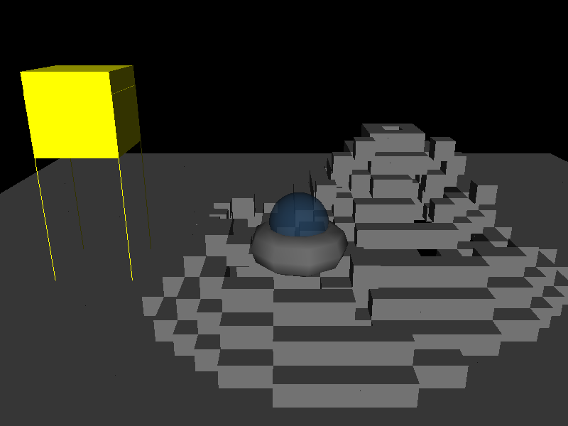
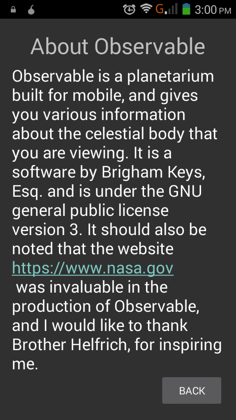

All of the software I have written is published in the public domain on my Github profile. The source code can be viewed there and downloaded. All of the software I have published is under free licenses. On this page I present screenshots from the projects current state and talk briefly about each.
3D_Snake
3D Snake is my implementation of the classic arcade game Nibbles, also known as Snake. My version has obstacles that the snake can run into in addition to running out of the arena. I used OpenGL to create a 3D board, and I used many of OpenGL's 3D abilities including lighting and normals. The board itself also features transparency. I am working on sprucing this project up a little bit with more graphical effects such as a highscore table.
Moonlander

I attempted to complete this task for my CS165 class but ran a bit short on time and patience, this last week I went and made this using freeglut, SDL2, and OpenGL to create this 3D version of moonlander. It features basic pysics, a platform and mountains generated using the Midpoint Circle Algorithm to make them circular and not round, I thought it was a rather creative application of the algorithm, as it is normally used in rasterized graphics.
bkeys_org
Is the website you are currently viewing. I use this website to tell the world about myself, and what I can (and like) to do. I used Bootstrap 3 to create this website, however I am excited about the 4th bootstrap release, though I do not think it is mature enough yet for real use, just my opinion. I try my best to make sure this site conforms to all web standards and that is renders correctly on all browsers.
Observable

Observable is a new project of mine, at the time of this writing it is very young in it's development. It is going to be a planetarium for mobile, allowing the user to have a 3 dimensional view of a given planet. The first version will include the solar system but if people enjoy it I hope to move to other solar systems and expand this project. This project panders greatly to my interest in astronomy.
GL_Less
These are lessons that are taught in the ACM OpenGL class at BYU-Idaho, they imply that a person has a basic understanding of the C++11 programming langauge, which is the first language taught at the school. It does not imply any knowledge of graphics. They are supposed to elevate a person's understanding of the library to an intermediate level, implementing shaders, loading 3D models, and alot more. The lessons features many samples that show each concept used in a real software. I am collaborating on this lesson series with Dane Christensen.
KC_Lib
Another project I am working on with Dane, this is a game engine of sorts. It handles graphics, collision, audio, and even networking. Dane has done alot of the work on this project; I was responsible for the audio implementation. If we get this done we plan to create a small game about aviation using this library.
Sudoku
For my Intro to Software Development class, our final project was to create a command line implementation of the classic game Sudoku. After I learned how to use OpenGL and FreeGlut, I decided I was going to take the day and make my own graphical version of the game. It is very simple and has minimal features, however the game is completely playable.